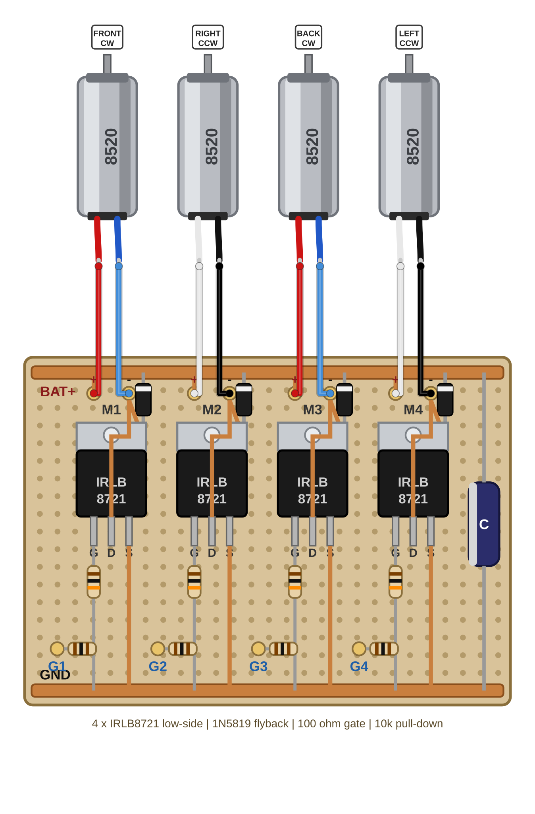

ארבעה מנועים, ארבעה ערוצים — ומהשלב הזה לכל מנוע יש כתובת משלו על הלוח.
מצב בטוח = סוללה מנותקת — זה המצב היחיד שבו נוגעים בחיווט ובמנועים. הסוללה מחכה בשקית חסינת האש שעל שולחן המורה והמדחפים בקופסאות שעל אותו שולחן; רק המורה מוציא אותם. מדחף עולה על הרחפן אחרון — ממש לפני שהסוללה נכנסת — ויורד ראשון, מיד אחרי שהסוללה יוצאת. מלחימים רק כשהמורה ליד, עם משקפי מגן על העיניים כל זמן שהמלחם דולק — בדיוק כמו בפרויקט 4.
לכל מנוע ערוץ משלו על הלוח. כך המוח יכול להפעיל כל מנוע בכוח אחר — ומכאן מגיעה ההטיה של הרחפן בטיסה.

motor ch spin "+" lead "-" lead FRONT M1 CW red -> M1+ blue -> M1- RIGHT M2 CCW white -> M2+ black -> M2- BACK M3 CW red -> M3+ blue -> M3- LEFT M4 CCW white -> M4+ black -> M4- check: M1+ <-> M1- beeps M1+ <-> M2- no beep
מקצרים את שני החוטים של כל מנוע כך שיגיעו לפדים שלו עם כ-1 ס"מ עודף. מקלפים 2 מ"מ ומצפים את הקצה בבדיל.
חוט קצר יותר שוקל פחות — וברחפן כל גרם נחשב.
מתחילים במנוע FRONT אל ערוץ M1: החוט האדום אל M1+ והחוט הכחול אל M1−.
ממשיכים באותו סדר: RIGHT אל M2, BACK אל M3 ו-LEFT אל M4. לפי הסימון של מנועי 8520: אדום או לבן הם הפלוס, כחול או שחור הם המינוס.
אם בהמשך מנוע יסתובב לכיוון ההפוך — התיקון הוא החלפה בין שני החוטים שלו על הפדים.
מלחימים כל חיבור כשהמורה ליד, בדיוק כמו בפרויקט 4: מחממים את נקודת החיבור, מצמידים את הבדיל, מרחיקים ונותנים לחיבור להתקשות.
מלבישים שרוול מתכווץ על כל חוט חשוף שעלול לגעת בשכן שלו.
מעבירים את המולטימטר למצב רציפות (צפצוף) ונוגעים ב-M1+ וב-M1−: צפצוף או 1–3 אוהם — זו הסלילה של המנוע. חוזרים על M2, M3 ו-M4.
בודקים שהערוצים נפרדים: נוגעים ב-M1+ וב-M2− — אין צפצוף.
רושמים על הכרטיס איזה מנוע יושב על איזה ערוץ — מהרישום הזה קוראים בשלב הבא, כשמחברים את חוטי הפיקוד.
שמונה חיבורי הלחמה — ארבעת הערוצים על הלוח תפוסים. המולטימטר "שומע" כל מנוע דרך שני הפדים שלו — ובין ערוץ לערוץ הוא שותק.
שום דבר עוד לא זז — אין סוללה ואין מדחפים.